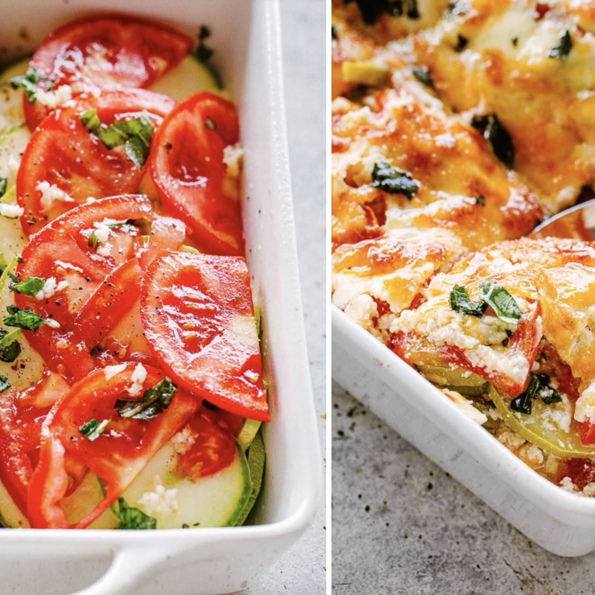

Vegetarian Tomato Casserole

Description
Ingredients:
- ¼ cup butter
- ⅓ cup onion, chopped
- 2 tablespoons finely chopped flat-leaf parsley
- 1 ¾ pounds tomatoes, sliced
- salt to taste
- 1 ¼ cups grated Parmesan cheese, divided
- 9 ounces sour cream
- 2 eggs
Steps:
- Melt butter in a skillet over medium-low heat and cook onion and parsley until soft, about 5 minutes.
- Preheat the oven to 350 degrees F (175 degrees C). Grease a casserole dish with butter.
- Spread out tomato slices in one layer in the casserole dish and season with salt. Distribute 1/2 of the onion mixture and 1/2 of the Parmesan cheese on top. Layer another row of tomato slices, season with salt, and sprinkle with remaining 1/2 of the onions. Finish with the final layer of tomatoes and season with salt.
- Whisk together sour cream, eggs, and salt and spread over tomatoes. Sprinkle with remaining Parmesan cheese.
- Bake in the preheated oven until set and lightly browned, about 30 minutes.
Nutrition Facts
Per Serving: 419 calories; protein 16.5g; carbohydrates 13.1g; fat 34.7g; cholesterol 162.5mg; sodium 578.9mg.